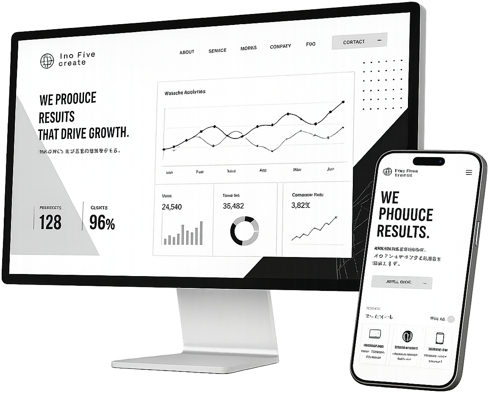
プロフィール
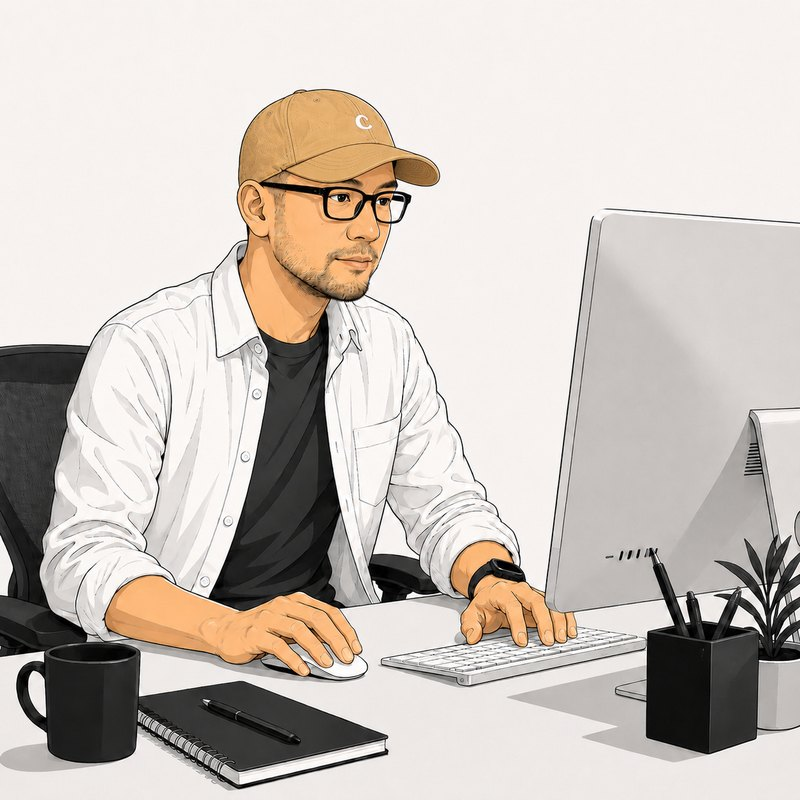
見た目は
ちょっと怖いけど、
人当たりの良さには定評があります。
福井 宏士 Hiroshi Fukui
Web業界で15年以上の経験を持つ、ディレクター兼エンジニアです。
ご相談から制作、その後の運用まで担当がコロコロ変わることなく、私が最後まで責任をもって直接サポートいたします。業種や規模に関わらず、「頼んでよかった」と思っていただける丁寧なモノづくりを心がけています。
休日は個人開発やギターを楽しんだり、妻と2人の子どもと過ごしたり。まずはどんなことでも、お気軽にご相談ください。
選ばれる3つの理由
フリーランスならではの強み
「柔軟で丁寧な体制」
個人事業ならではの機動力で、タイトなスケジュールにも柔軟に対応。丁寧なヒアリングと分かりやすい言葉で、最適なWebサイトの形をご提案します。
最新AIワークフローによる
「高品質×適正価格」
AIを活用したコーディングとプロの目利きを掛け合わせ、プロセスを最適化。余分な工数を削減し、クオリティを維持したままコスト圧縮を実現します。
作って終わりじゃない。
公開後がスタートです。
面倒なサーバー保守やメンテナンスも丸ごとお任せ。Web担当者様の負担を最小限に抑え、サイトを安全に育てます。
サービス一覧
WordPressサイト構築・改修
専門知識やコーディングの知識がなくても、「お知らせ」や「実績」を簡単に更新できるWordPressサイトを制作します。既存サイトの改修や機能追加もお気軽にご相談ください。
フロントエンド・コーディング
いただいたデザインの魅力を100%引き出し、スマートフォンでもパソコンでも快適に閲覧できるサイトに仕上げます。見えない部分の品質にもこだわります。
WEBサイト移転
サーバーやURLのお引っ越しを、ビジネスを止めることなく安全に行います。他社で作られたサイトの引き継ぎもお任せください。
インフラ・サーバー設定
サーバーやドメインの準備など、面倒な裏側の設定をすべて代行します。公開後も安定して動き続ける環境を整えます。
AI活用による業務改善
自動化ソリューション
入力作業やデータ集計など、手間のかかる単純作業をAIとプログラムで自動化。現場で本当に役立つツールとしてご提供します。
Web・SEO
コンサルティング
「Webからの売り上げアップ」など具体的な目標に向けて、現状を分析し改善策をご提案。長期的な視点でサポートいたします。
「Webの悩み」を
「ビジネスの強み」へ。
高品質なサイトを安心価格で。
制作実績・自社プロダクト
多種多様なサイト制作の実績がございます。
もちろん、掲載のない業種やご要望でもご提案が可能です。
実績の多くは守秘義務などの事情によりWeb上での公開ができません。
実績をご覧になりたい方は、お問い合わせフォームからお願いします。
Original Products
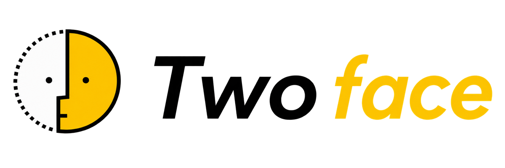
Two-Face
ユーザーの属性や訪問目的に合わせて表示内容を動的に変える、独自の制作フレームワーク。「約1サイト分の制作費」で、ターゲットごとの専用ページ相当を実現できます。
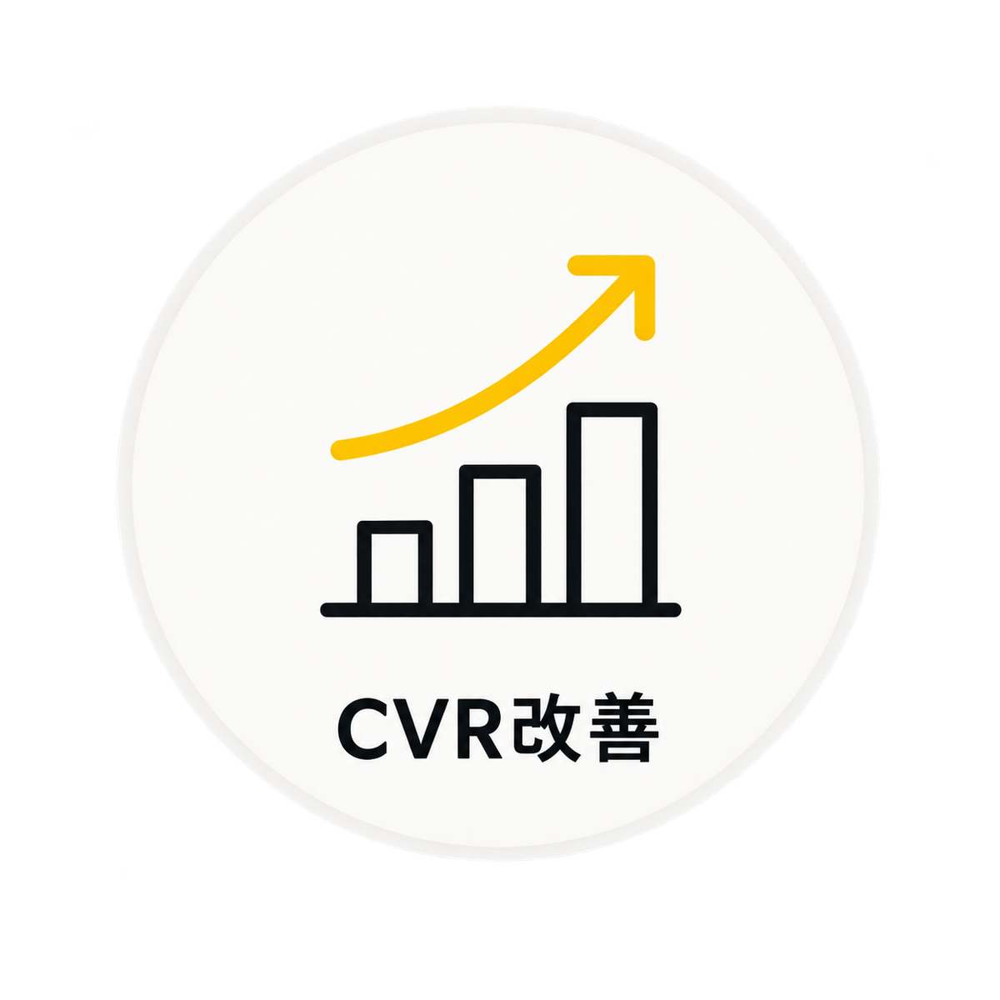
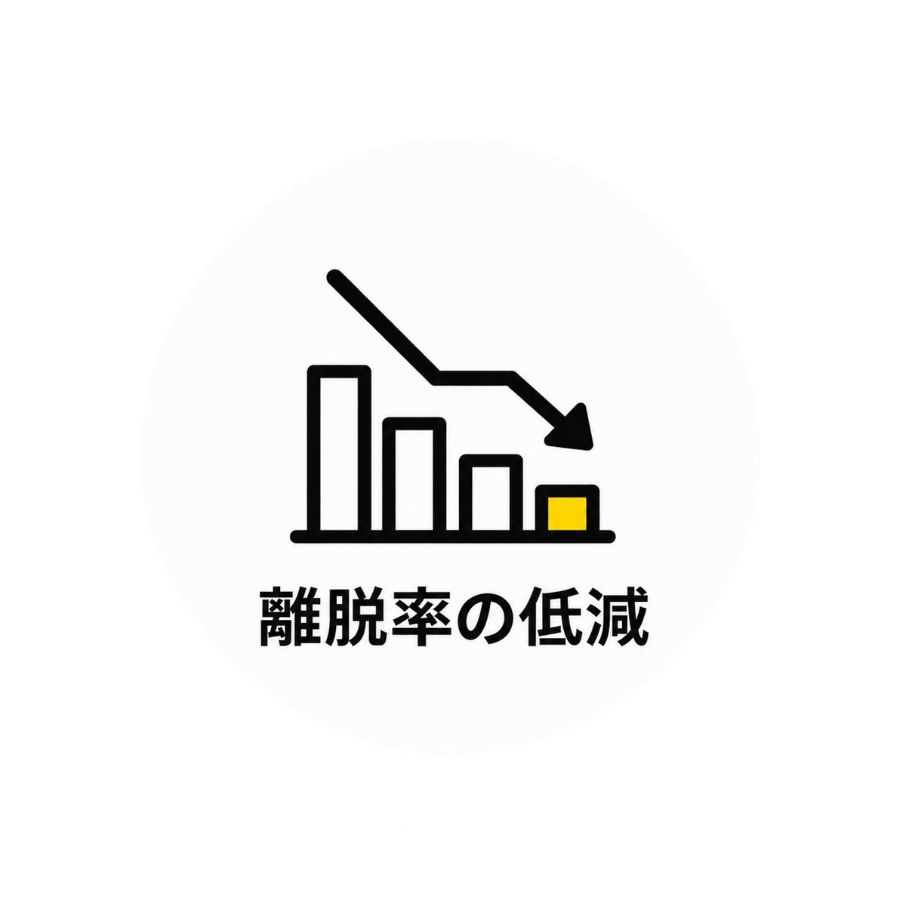
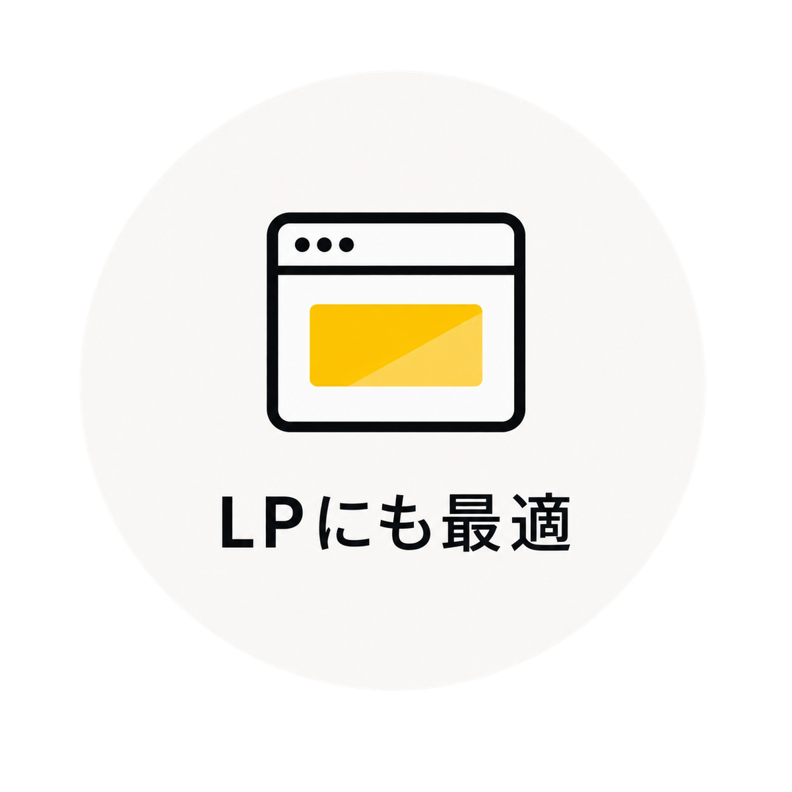
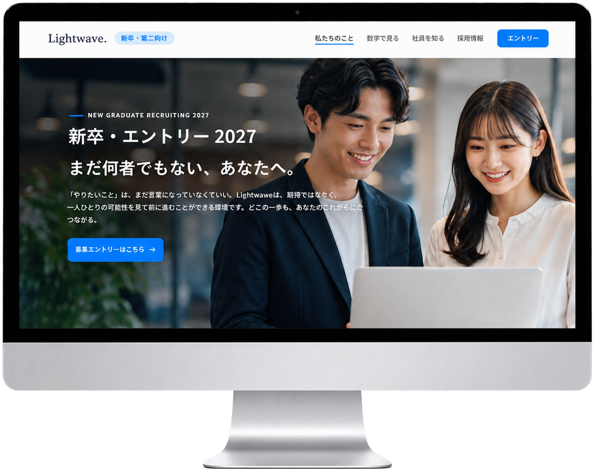
WEBツール・小規模アプリ開発
様々なニーズに応える、小回りの利く機能実装・ツールアプリの開発を行っています。
AIエージェントを活用したバイブコーディングで実装を行っています。小さいものなら 数日・数万円 からご相談いただけます。
-
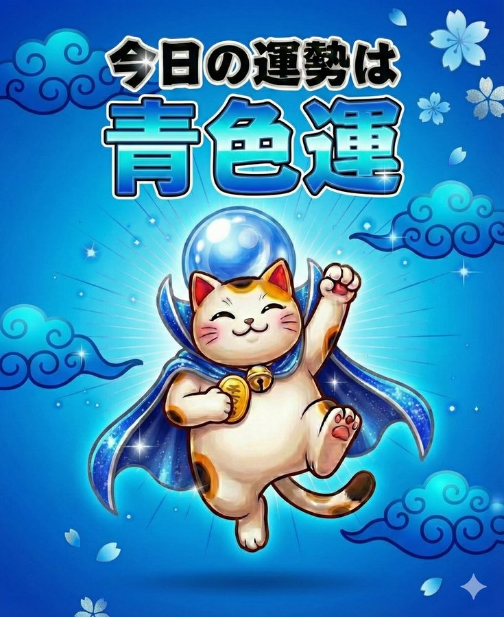
-
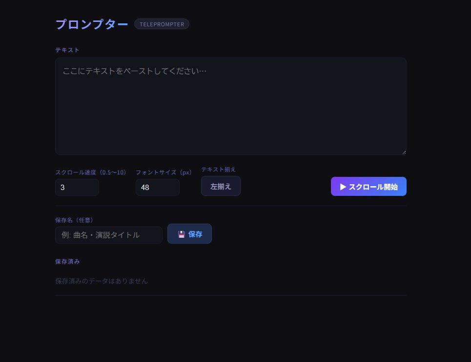
-
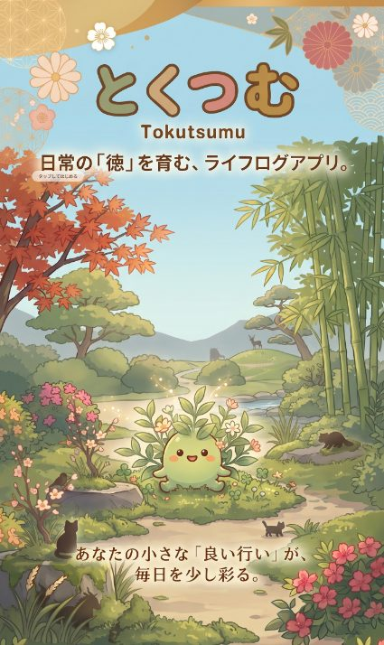
ご相談から公開までの6STEP
全体の制作期間は、プロジェクトの規模や要件により異なりますが、目安としてランディングページ（LP）や単機能ツールは約1〜1.5ヶ月、コーポレートサイト・システム連携サイトは約2〜6ヶ月で公開まで進行します。
ヒアリング
まずは「こんなことできる？」とお気軽にご相談ください。
すべての工程の詳細を開閉する
専用フォームよりご連絡いただいた後、オンライン等で目的や要件、現在お困りのことなどを丁寧に整理いたします。
最適なプランとお見積りをご提示します。（ここまでは無料です）
すべての工程の詳細を開閉する
ヒアリング内容をもとに、必要な機能や最適な進め方をご提案します。ご納得いただけましたら正式なご発注となります。
（ワイヤーフレーム）
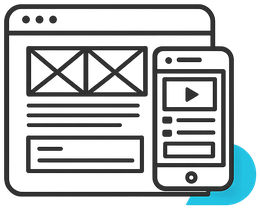
サイトの骨組みと
導線を決定します。
すべての工程の詳細を開閉する
デザイン前にサイトの設計図（ワイヤーフレーム）を作成し、文章や画像の配置を決めます。素材のご準備もこの段階からお願いいたします。
実際の見た目（＝1枚の画像）としてご確認いただきます。
すべての工程の詳細を開閉する
設計図をもとに色や写真、装飾を反映したデザインを作成します。※この段階は「一枚の画像」での確認となり、クリック等のWeb機能はまだありません。
システム実装
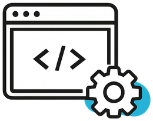
ブラウザで動く「本物のWebサイト」の形に組み立てます。
すべての工程の詳細を開閉する
デザインをWebサイトとしてコーディングし、WordPress等を実装します。専用のテストURLにて、お手元のスマホやPCから実際の動きをご確認ください。
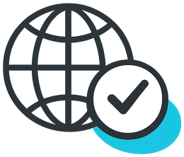
最終確認後、インターネット上へ公開（納品）します。
すべての工程の詳細を開閉する
すべてのチェックが完了しましたら、ドメインやサーバーの設定を行い、本番公開となります。公開後の保守メンテナンスや機能追加なども、引き続きサポートいたします。
ご不明点やご要望は
いつでもご相談ください。
お客様のビジネスに最適なWebサイトを、丁寧に、確実にお作りします。